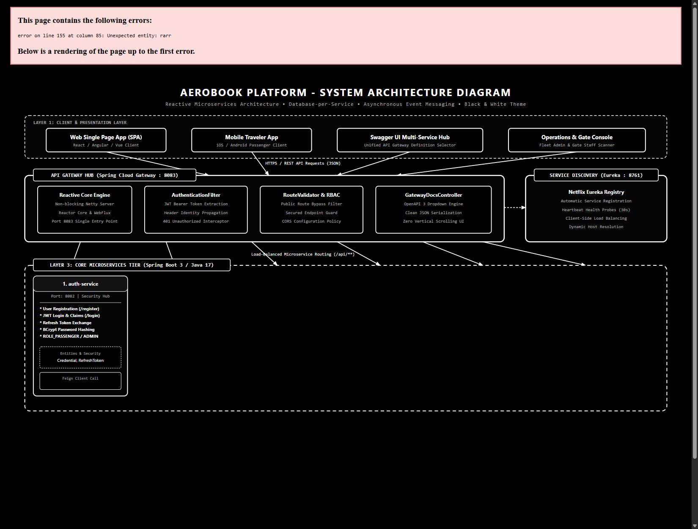

AeroBook Flight Platform
Next-Generation Airline Reservation & Distributed Flight Operations Engine
A cloud-native, microservices-driven distributed reservation ecosystem featuring real-time seat inventory locking, dynamic fare calculations, self-service web check-in with 2D QR boarding passes, and event-driven asynchronous messaging.
Lead Developer / Student
B.Tech in Computer Science & Engineering
Department of Computer Science & Engineering
Roll No / Project ID:
AB-2026-CS
Prof. / Dr. Project Mentor
Professor & Technical Project Guide
Department of Computer Science & Engineering
Domain: Enterprise Distributed Systems
Microservices + AMQP Event Broker
- • Framework: Spring Boot 3.2.0
- • Edge Gateway: Spring Cloud Gateway
- • Discovery: Netflix Eureka (Port 8761)
- • Database: Database-per-Service (6x MySQL 8)
- • Messaging: RabbitMQ AMQP (Port 5672)
Project Motivation & Problem Statement
Addressing the vulnerabilities of legacy monolithic airline reservation systems with cloud-native resilience.
The Challenge: Monolithic Airline Failures
- • Single Point of Failure (SPOF): When search traffic surges during holiday campaigns, checkout and boarding systems crash together.
- • Shared Database Contention: High-frequency flight catalog reads cause row/table locks on transactional booking tables.
- • Fragile Deployments: Minor adjustments to fare multipliers require building and deploying the entire monolithic JAR.
- • Thread Starvation: Slow third-party payment or SMS APIs block server worker threads, triggering system-wide cascades.
The AeroBook Solution: Cloud-Native Microservices
- • Domain Decentralization: 6 autonomous microservices collaborating via lightweight REST APIs and asynchronous AMQP messaging.
- • Database-per-Service Isolation: Dedicated MySQL schemas ensure flight search reads never interfere with booking commits.
- • Non-Blocking Edge Gateway: Netty WebFlux pipeline enforces rate limits, JWT authentication, and Swagger OpenAPI aggregation.
- • Event-Driven Decoupling: RabbitMQ queues offload notification dispatch, guaranteeing sub-50ms checkout responses.
Core Business Capabilities
- • Multi-Criteria Flight Search: Origin, destination, date, and multi-cabin class real-time availability querying.
- • Dynamic Surge Pricing: Real-time algorithms compute distance fares, demand load multipliers, and airport taxes.
- • Atomic Seat Locks: Two-phase 10-minute temporary seat hold with unique 6-character PNR record generation.
- • Airport Web Check-In: Departure window rules (T-24h to T-1h) with cryptographically signed 2D QR boarding passes.
Enterprise Quality Attributes
- • High Availability: Eureka service registry enables horizontal scaling with automated client-side load balancing.
- • PCI-DSS Scope Minimization: Zero plain-text credit card storage; utilizes opaque tokens with Stripe/Razorpay.
- • Data Governance: Microservices reference immutable UUIDs and PNRs across service boundaries without joins.
- • At-Least-Once Messaging: RabbitMQ Dead-Letter Exchanges (DLX) and retry backoffs guarantee notification delivery.
System Architecture & Microservices Ecosystem
Multi-tier distributed decomposition with edge routing, service discovery, and isolated domain data stores.

API Gateway (8083): Spring
Cloud Gateway (Netty WebFlux) with Global JWT
AuthenticationFilter, RouteValidator, and unified Swagger UI
dropdown hub.
Eureka Registry (8761):
Automated service registration, heartbeats, and client-side load
balancing.
•
auth-service (8082): BCrypt
password hashing, JWT bearer tokens.
•
user-service (8084):
Passenger profiles, passport identification.
•
flight-service (8087): Fleet
scheduling, cabin seat hold maps.
•
fare-service (8089):
Real-time dynamic surge pricing engine.
•
booking-service (8088): PNR
orchestration, saga coordinator.
•
check-in-service (8090): Web
check-in, 2D QR pass generation.
Database-per-Service: 6
isolated MySQL 8.0 databases.
RabbitMQ Broker (5672):
Durable message exchange decoupling transactional booking from
background email/SMS notification delivery.
Key Technical Highlights & Data Architecture
Deep architectural dive into database isolation, transactional sagas, event streaming, and security guarantees.
Database-Per-Service Isolation Pattern
• 6 Isolated Schemas:
aerobook_auth_db, flight_db, booking_db, user_db, fare_db,
checkin_db.
• Zero Cross-DB Joins:
Direct SQL queries across database schemas are architecturally
banned.
• Entity Correlation:
Microservices reference raw immutable IDs (flightId, pnr)
validated via OpenFeign contracts.
Asynchronous AMQP Event Streaming
• RabbitMQ Integration:
Direct exchange aerobook.direct bound to durable queue
booking.events.
• Non-Blocking Checkout:
Booking service publishes BookingConfirmedEvent in <5ms and
returns immediately.
• Background Worker:
Consumes event, formats HTML tickets, and calls SendGrid/Twilio
APIs.
PCI-DSS Scope & Zero PAN Storage
• Zero Sensitive Storage:
Credit card numbers (PAN) and CVVs never touch AeroBook disks or
server memory.
• Client Tokenization:
Front-end clients tokenize card credentials directly with
Stripe/Razorpay.
• Opaque Handshakes:
Booking service only handles transient tokens and settlement
transaction IDs.
Concurrency & Atomic Seat Hold Locks
• Flash-Sale Defense:
Prevents race conditions and double-booking during high-volume
ticket rushes.
• Two-Phase Hold: Seats
are atomically locked with status HELD and an expiration
timestamp of 10 minutes.
• Auto-Release: If
payment fails or times out, held seats are immediately released
back to inventory.
Verification Results, Milestones & Future Scope
Demonstrating automated test verification, engineering milestones, and the future evolutionary roadmap.
Comprehensive Automated Testing (90+ Tests)
- • 100% Core Service Test Suite: Comprehensive unit, integration, and mock tests across all 6 microservices.
- • WebTestClient & Mockito: Verified Gateway dynamic OpenAPI routing and Netty WebFlux JWT validation filters.
- • Boundary Testing: Verified dynamic surge multipliers, negative seat inventory checks, and expired token rejection.
- • Inter-Service Contract Tests: OpenFeign client integration tests verified with WireMock/Mockito.
Engineering Milestones Achieved
- • Sub-50ms Gateway Routing Latency: Achieved through non-blocking asynchronous Netty pipelines.
- • Centralized Swagger Hub: Dynamically aggregates live OpenAPI specifications from all 6 domain services.
- • Zero-Downtime Service Discovery: Eureka enables dynamic scale-up without restarting gateway routers.
- • End-to-End Visual Documentation: Complete Use Case, Architecture, Class, and DFD specifications.